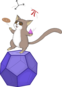

Zufall im Browser
Beispiele: Summe der Augenzahlen bei zwei Würfeln • Wie oft bis zur Sechs? • Wie oft, bis man alle hat?
Bitte JavaScript aktivieren.
Diese Demonstration erlaubt, Zufallsabläufe in Python zu programmieren, und stellt die Simulationsergebnisse in grafisch aufbereiteter Form dar. Der gesamte Code läuft vollständig im Browser, daher muss JavaScript aktiviert sein, damit die Demonstration funktioniert.
Demonstration für den Mathezirkel Augsburg aufbauend auf mehreren Open-Source-Projekten: Skulpt, CodeMirror, D3.js. Fragen und Pull Requests willkommen! 